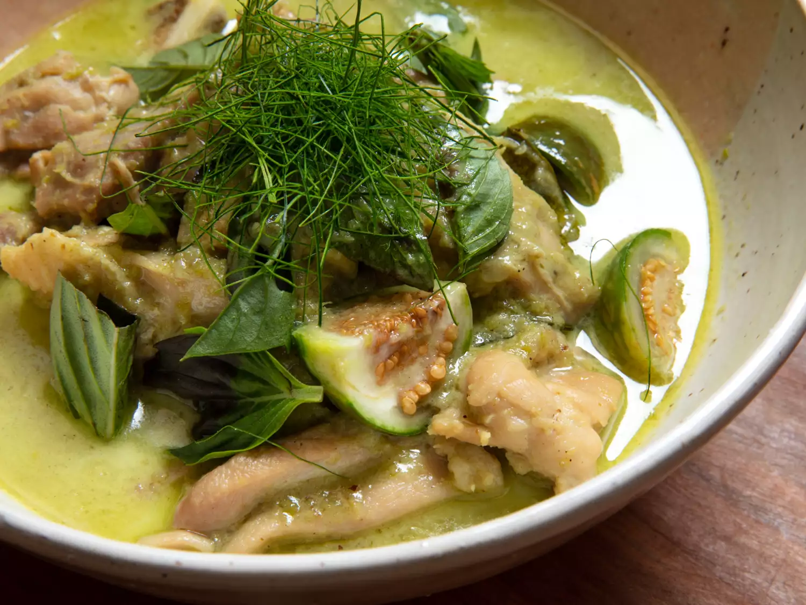

Katsu Curry (Japanese Curry with Chicken Cutlet)
Description
Kaeng khiao waan gai, or green curry with chicken, is one of the most well-known and popular Thai curries in the world. A rich coconut milk-based curry, part of its crowd-pleasing nature is its balance: it’s spicy, but not too spicy; it’s sweet, but not too sweet; and the richness of the coconut milk pairs well with the relative leanness of chicken meat. The curry takes its name from the green chiles used to make prik gaeng khiao waan, the curry paste that forms its base, which also contains fresh aromatics, like lemongrass, galangal, garlic, and shallots, along with dried spices and shrimp paste. (The curry paste is fundamentally identical to the red curry paste, prik gaeng phet, used to make red curry, or gaeng phet, aside from the fact that it uses green chiles instead of dried red chiles.) Like many Thai dishes, there’s a lot of speculation about its origins. Hanuman Aspler, a scholar of Thai food and one of my mentors, has noted that green curry is a relatively new addition to Thai cuisine, one that likely originated in the kitchens of the Thai aristocracy sometime during the 1920s. In his examination of historic Thai cookbooks, Aspler found few if any mentions of green curry, just red curry. And although there’s no definite answer as to why green chiles came to be used in place of red chiles to make green curry paste, there is speculation that the substitution came about due to the influence of Indian-style curries.
Ingredients
- 1 1/2 cups (355ml) full-fat coconut milk, such as Aroy-D, divided
- 10 fresh or frozen makrut lime leaves, divided
- 2 tablespoons (30ml) virgin coconut oil
- 4 ounces (1/2 cup; 115g) homemade or store-bought green curry paste
- 1 tablespoon plus 2 teaspoons (35g) palm sugar
- 3 tablespoons (45ml) fish sauce
- 1 pound (450g) boneless skinless chicken thighs, cut into 2-inch pieces
- Kosher salt
- 5 Thai eggplants (about 5 1/4 ounces; 150g total), stemmed, quartered, and placed in a small bowl of water
- 1 packed cup (about 1 ounce; 30g) fresh sweet basil leaves (a.k.a. Thai basil)
- Cooked jasmine rice, for serving
Directions
- In a small bowl, whisk together 1/2 cup (120ml) coconut milk and 1/2 cup (120ml) water; set thinned coconut milk mixture aside. Remove and discard the mid-rib from the makrut lime leaves; set 8 of the leaves aside. Stack remaining 2 makrut lime leaves, fold in half widthwise, then slice into hair-thin strips; set aside separately.
- In a 3-quart saucepan, combine coconut oil with 1/2 cup (120ml) coconut milk and bring to a simmer over medium heat. Cook, stirring often with a rubber spatula, until thickened slightly, about 1 minute.
- Add curry paste, stir vigorously to combine, and use a rubber spatula to scrape sides of the saucepan to fully incorporate paste. Raise heat to medium-high and cook, stirring and scraping constantly until paste mixture begins to spit (which indicates that water content has been cooked off, and mixture has begun to fry in coconut oil), about 1 minute. Lower heat back to medium, and continue to cook while gradually adding remaining 1/2 cup (120ml) coconut milk in 2-tablespoon (30ml) increments, until paste darkens slightly and the fat begins to separate from curry paste, 5 to 6 minutes.
- Add fish sauce and palm sugar, and stir until palm sugar is fully dissolved, about 30 seconds. Lightly season chicken on all sides with salt, add to saucepan with reserved whole makrut lime leaves, and stir to evenly coat with curry paste mixture. Add reserved thinned coconut milk mixture and bring to a simmer. Cook, stirring occasionally, until chicken is cooked through and tender and liquid has thickened slightly, about 10 minutes.
- Add eggplants, and continue to cook, adjusting heat as needed to maintain a simmer, until eggplants are just cooked through but still have some bite to them, about 3 minutes. Remove from heat, add sweet basil, and stir until wilted and incorporated.
- Transfer curry to a large serving bowl or divide between individual bowls, and garnish with reserved thinly-sliced makrut lime leaves. Serve with cooked jasmine rice.